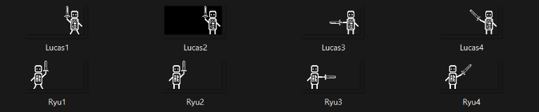

For this project at school, I had 3 days to learn how to connect and make synchronized communication between two ESP32s to play a 1v1 fighting game with another local player. With one of my classmates, we decided to make a game inspired by Street Fighter. We first designed two pixel art characters, each with four different frames of moves.
We first tried to display the characters on the 128x64 screen and make them move when pressing a button. Initially, we wanted to control the characters' movements with a joystick, but we couldn't display it correctly. So, we decided to focus solely on the attacking mechanics.
Then, we used WebSocket to connect both boards by creating a server on my classmate's board and connecting my board to it. We successfully created a mini-game with the two boards, where the objective was to press the button as fast as possible until the opponent lost all their life points to win. However, we couldn't implement the character animations in the game, which was a bit disappointing.